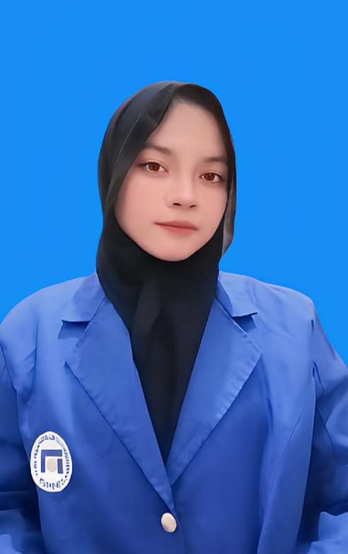

HALO, SAYA
Mahasiswa Universitas Dian Nuswantoro yang memiliki semangat untuk terus belajar, mengembangkan kemampuan, dan memperoleh pengalaman baru.
Kenali Saya
Saya merupakan mahasiswa Program Studi Sistem Informasi, Fakultas Ilmu Komputer, Universitas Dian Nuswantoro. Saya adalah lulusan SMK Negeri 3 Semarang jurusan Teknik Ketenagalistrikan. Saya memiliki pengalaman praktik kerja lapangan di PT PLN (Persero) ULP Semarang Timur. Saya tertarik untuk mempelajari hal-hal baru, terutama yang berkaitan dengan teknologi dan sistem informasi.
S1 Sistem Informasi
Teknik Ketenagalistrikan
Pendidikan Menengah Pertama
Pendidikan Sekolah Dasar
Menyelesaikan praktik kerja lapangan dengan amanah serta memperoleh pengetahuan dan pengalaman mengenai kelistrikan, khususnya arus listrik kuat.
Memiliki pengalaman bekerja selama kurang lebih enam bulan dalam melayani pelanggan, membantu kegiatan penjualan, dan menjaga tanggung jawab kerja.
Terima kasih telah mengunjungi halaman CV saya. Silakan hubungi saya melalui kontak berikut.
Email: narrnaz07@gmail.com
WhatsApp: +62 8181 8689 398
Instagram: @nnralv._